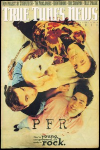

CMnexus: Contemporary Christian culture, music, and media.
|
|
PFROn the cover|  | Spring 1994
True Tunes News | Media coverage:- Oct 1992 in CCM "Hot New Bands", by Anya Krause, Dan MacIntosh
- Jan 1993 in Syndicate "Spotlight: A Clear Message From Minnesota", by T. L. Faris
- Apr 1993 in CCM "In Concert: Church of the Open Door, Minneapolis, MN", by Lori Gardner
- Jul 1993 in The Lighthouse "PFR", by J. Warner Soditus
- Jan 1994 in CCM "Off The Leash", by April Hefner
- Spr 1994 in True Tunes News "PFR", by John J. Thompson
- May 1994 in Heaven's Metal "Dogs Having Their Day", by Dan MacIntosh
- May 1994 in Syndicate "Concert Review: CEMFA Showcase, Schuba's Nightclub, Chicago", by John J. Thompson
- Jan 1995 in CCM "Ending The World's Hunger Strike", by Doug Trouten
- Mar 1995 in Campus Life "Tell Me About It: PFR", by Chris Lutes
- Jul 1995 in CCM "In Concert: Belmont University, Nashville, TN", by Lucas W. Hendrickson
- Jul 1995 in CCM "Conversations: Workin' It Out", by Jim Long
- Feb 1996 in HM "Concert Review: PFR", by Brian Vincent McGovern
- May 1996 in Campus Life "These Pop-Rockers Are Friends Forever"
- Jul 1996 in HM "Brother vs. Brother", by Doug Van Pelt
- Aug 1996 in CCM "PFR's Last Day", by April Hefner
- May 2001 in HM "When Families Pray For Rain", by L Jeanette Strole
- Jul 2001 in CCM "Wonder Why", by Beau Black
- Aug 2004 in CCM "Insider: PFR Set to Reappear?", by Christina Farris
- Dec 2004 in CCM "Insider: They're Baaack!", by Christina Farris
Albums & reviews:1992: Pray For Rain1993: Goldie's Last Day1994: Unleashed1994: Great Lengths1996: Them1998: The Late Great PFR2001: Disappear2004: The Bookhouse Recordings2006: Very Best Of PFR Award Summary (Nominations / Wins)Dove Awards1995 Dove Awards- Rock Album: Goldie's Last Day
- Rock Recorded Song: "Walk Away From Love"
1996 Dove Awards1997 Dove AwardsBillboard Music Video AwardsBooks about PFR- "PFR (a.k.a. Pray For Rain)" in The Encyclopedia of Contemporary Christian Music (Mark Allan Powell, 2002)
|